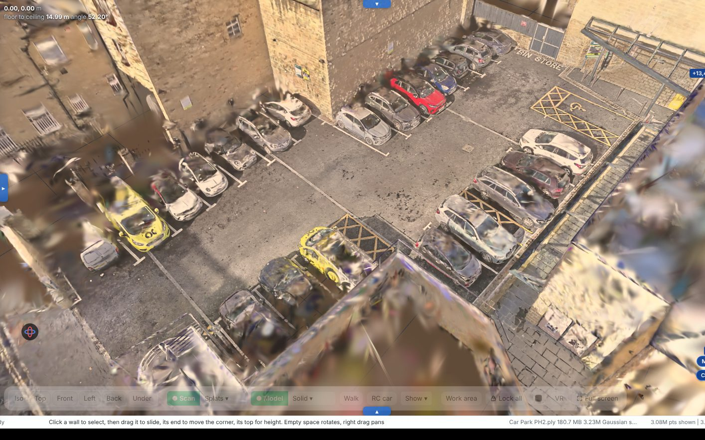

Clean, measure and present your 3D scans
Open an XGRIDS LCC folder or any splat or point cloud. Take out the cars and people, measure it, compare visits and make a film. Everything stays on your computer.

What you can do with it
Three jobs, all in one desktop app.
Take out cars, people and floaters
Click a car to pick it and delete it. The ground behind it is filled in. Trim the edges, level the floor and set the scale.
Clean up toolsLengths, heights, areas and volumes
Snap to walls and edges in plan, sections and 3D. Stockpiles, cut and fill, floor levels and ponding, each with a report.
Measuring toolsDrawings, comparisons and films
Plans and sections as PDF or DXF. Line up visits from different days, then render a walk-through or a timelapse to MP4.
Films and drawingsChecked against a room of known size
We built a test scan with exact sizes, tilted and turned it the way a scanner leaves a scan, and measured it with Scan Bench's own tools.
Clean it up
Take out the cars, people and floaters, and fill the gap behind them so nobody can tell.
- Select and delete in 3D, with undo
- Fill behind what you removed
- Level, crop and set the scale
- Save a clean PLY or a small SPZ
Compare visits over time
Line up scans of the same site from different days, slide between them, then make a timelapse of the build.
- Line up by clicking 3 matching spots, or automatically
- Slider or flick between dates
- Cut and fill volumes between two visits
- Timelapse with Build up, Laser scan, Wipe and more
Films and drawings
Walk-through and fly-through films with weather and lighting, plus measured plans and sections for the office.
- Sun, rain, snow, fog and fireworks
- Smooth camera routes, rendered to MP4
- Plans, sections and elevations as PDF or DXF
- VR with a Meta Quest
How it works
Three steps, all on your computer.
Open the scan
Point Scan Bench at the XGRIDS LCC folder, or drop in a PLY, E57 or splat file. It levels the floor and squares the building to the plan by itself.
Tidy it and measure
Take out what should not be there, trim the edges, set the scale, then measure lengths, heights, areas and volumes.
Send something
A clean PLY or small SPZ, a PDF or DXF drawing, a volume report, or an MP4 film.
Beta licence, £49 one-off
Every tool, every update while the beta runs, 2 computers, 14 days money back.